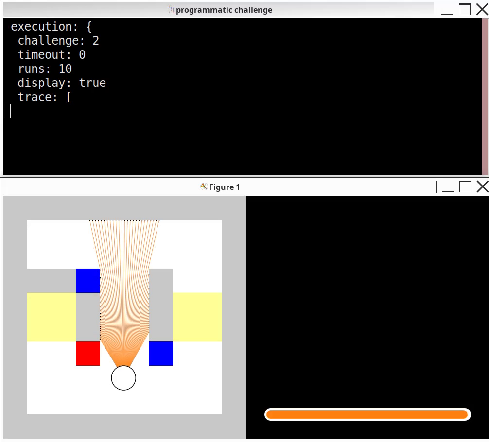

The programmatic task2 demonstration

{
programmatoid_make:
true prgm:
programmatic_task2 date:
2026-06-28_21-59-06 source: "
programmatic_task2.py"
execution: {
challenge:
2 timeout:
0 runs:
10 display:
true trace: [ ]
evaluation-time: "
141.27 sec"
iterations: "
846.30 ± 1.27"
distances: "
6.92 ± 0.02"
hits: "
155.10 ± 0.94"
}
}